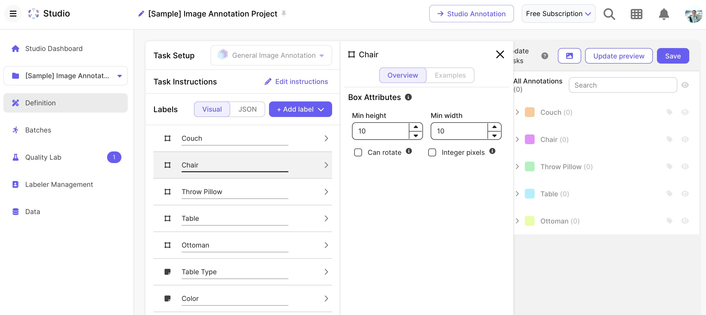

النظام البيئي المتكامل لأدوات الذكاء الاصطناعي | أصلي، ترجم بواسطة AI
جدول المحتويات
- Jina AI
- سكريبت بايثون لدمج Jina AI
- جلب محتوى URL باستخدام
r.jina.ai - معالجة استعلامات البحث باستخدام
s.jina.ai - ترميز Base64 والمصادقة على API
- Tavily AI
- واجهة برمجة تطبيقات البحث بالذكاء الاصطناعي المخصصة لتطبيقات LLM
- الإعداد وتسجيل مفتاح API
- تنفيذ عميل بايثون
- أمثلة طلبات البحث والاستخدام
- Open WebUI
- تثبيت واجهة الذكاء الاصطناعي المحلية
- إعداد الخادم والتكوين
- تكامل Ollama للنماذج المحلية
- وقت التثبيت والمتطلبات
- Tableau وScale وPower BI
- مقارنة منصات ذكاء الأعمال
- تجربة النسخة التجريبية لـ Tableau لمدة 13 يومًا
- نظرة عامة على منصة Scale للبيانات
- ميزات Microsoft Power BI
- استخدام OpenRouter
- قبول بطاقات فيزا الصينية
- تحليل تصنيفات النماذج والاتجاهات
- فئات استخدام LLM والتطبيقات
- متطلبات VPN في هونغ كونغ للوصول إلى واجهة برمجة تطبيقات Anthropic
- ElevenLabs AI
- تكامل واجهة برمجة تطبيقات تحويل النص إلى كلام
- قدرات استنساخ الصوت
- إنشاء صوتيات متعددة اللغات
- سكريبت بايثون لتحويل الصوت
Jina AI
يتفاعل هذا السكريبت البايثوني مع خدمات Jina AI باستخدام مفاتيح API ووسائط سطر الأوامر. وهو يدعم وظيفتين رئيسيتين: جلب المحتوى من URL وتنفيذ استعلام بحث. يسترجع السكريبت مفتاح Jina API من متغيرات البيئة، مما يضمن وصولاً آمنًا إلى الخدمات. يستخدم مكتبة requests لتنفيذ طلبات HTTP وbase64 لفك تشفير استعلام البحث. ثم يطبع السكريبت الرد من خدمة Jina AI.
import os
import requests
from dotenv import load_dotenv
import argparse
import base64
load_dotenv()
api_key = os.environ.get("JINA_API_KEY")
if not api_key:
raise ValueError("JINA_API_KEY environment variable not set.")
parser = argparse.ArgumentParser()
parser.add_argument("--job", type=str, choices=['url', 'search'], help="Job to execute (url or search)", required=True)
parser.add_argument("--input", type=str, help="Input for the job", required=True)
args = parser.parse_args()
if args.job == 'url':
url = f'https://r.jina.ai/{args.input}'
headers = {'Authorization': f'Bearer {api_key}'}
print(f"URL: {url}")
print(f"Headers: {headers}")
response = requests.get(url, headers=headers)
print(response.text)
elif args.job == 'search':
question = base64.b64decode(args.input).decode('utf-8', errors='ignore')
url = f'https://s.jina.ai/{question}'
headers = {
'Authorization': f'Bearer {api_key}',
'X-Engine': 'direct',
'X-Retain-Images': 'none'
}
print(f"URL: {url}")
print(f"Headers: {headers}")
response = requests.get(url, headers=headers)
print(response.text)
else:
print("Please specify --job url or --job search")
Tavily AI
Tavily هو واجهة برمجة تطبيقات بحث بالذكاء الاصطناعي مصممة خصيصًا لتطبيقات LLM. يوفر نتائج بحث ذات صلة عالية من خلال دمج البحث على الويب مع معالجة الذكاء الاصطناعي.
لاستخدام Tavily، ستحتاج إلى:
- التسجيل للحصول على مفتاح API في tavily.com
- تثبيت حزمة بايثون.
import os
from tavily import TavilyClient
# استرجاع مفتاح API من متغير البيئة
TAVILY_API_KEY = os.getenv('TAVILY_API_KEY')
if TAVILY_API_KEY is None:
raise ValueError("API key not found. Please set the TAVILY_API_KEY environment variable.")
# تهيئة TavilyClient بالمفتاح المسترجع
tavily_client = TavilyClient(api_key=TAVILY_API_KEY)
# تنفيذ طلب بحث
response = tavily_client.search("Who is Leo Messi?")
# طباعة الرد
print(response)
Open WebUI
-
Open WebUI أداة رائعة.
-
لبدء الخادم، قم بتنفيذ هذه الأوامر:
pip install open-webuiثمopen-webui serve. -
قد تستغرق عملية التثبيت بعض الوقت (حوالي 10 دقائق أو أكثر).
-
يعمل Open WebUI بشكل جيد مع Ollama.
Tableau وScale وPower BI
Tableau
بعد التسجيل، تم إعلامي بأن لدي 13 يومًا لتجربة الخدمة.
 المصدر: tableau.com
المصدر: tableau.com
Scale
 المصدر: scale.com
Power BI
استخدام OpenRouter
-
يتم قبول بطاقات فيزا الصينية.
-
صفحة التصنيفات مثيرة للاهتمام لمشاهدة أحدث النماذج والاتجاهات.
-
يمكنك رؤية كيفية استخدام الناس لنماذج LLM في فئات مثل Roleplay والبرمجة والتسويق وMarketing/SEO والتكنولوجيا.
-
بالنسبة للمستخدمين في هونغ كونغ، لا يزال مطلوبًا استخدام VPN للوصول إلى واجهة برمجة تطبيقات Anthropic.
ElevenLabs AI
-
رائع. لقد استخدمت 5 دولارات أمريكية لاختبار الخدمة.
-
استنساخ الصوت رائع.
-
عينات الصوت أدناه:
import os
import requests
from dotenv import load_dotenv
import argparse
import re
load_dotenv()
api_key = os.environ.get("ELEVENLABS_API_KEY")
if not api_key:
raise ValueError("ELEVENLABS_API_KEY environment variable not set.")
parser = argparse.ArgumentParser()
parser.add_argument("--file", type=str, help="Markdown file to convert to speech", required=False)
parser.add_argument("--text", type=str, help="Text to convert to speech", required=False)
parser.add_argument("--output", type=str, help="Output file name", required=True)
parser.add_argument("--voice_id", type=str, default="21m00Tcm4TlvDq8iK2G8", help="Voice ID to use")
args = parser.parse_args()
if args.file:
try:
with open(args.file, 'r') as f:
content = f.read()
# إزالة front matter
content = re.sub(r'---.*?---', '', content, flags=re.DOTALL)
text = content.strip()
except FileNotFoundError:
print(f"Error: File not found: {args.file}")
exit(1)
except Exception as e:
print(f"Error reading file: {e}")
exit(1)
elif args.text:
text = args.text
else:
print("Error: Either --file or --text must be specified.")
exit(1)
url = f"https://api.elevenlabs.io/v1/text-to-speech/{args.voice_id}"
headers = {
"Accept": "audio/mpeg",
"Content-Type": "application/json",
"xi-api-key": api_key
}
data = {
"text": text,
"model_id": "eleven_flash_v2_5",
"voice_settings": {
"stability": 0.5,
"similarity_boost": 0.5
}
}
response = requests.post(url, json=data, headers=headers)
if response.status_code == 200:
with open(args.output, 'wb') as f:
f.write(response.content)
print(f"Audio saved to {args.output}")
else:
print(f"Error: {response.status_code} - {response.text}")